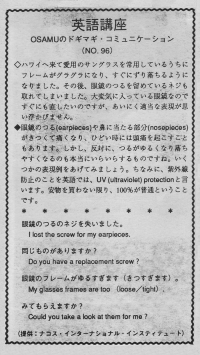

眼鏡のねじを失いました。
Osamu was using his sunglasses for a long time so the frame was weak. His glasses kept falling off his face. After a while, he realized that he had lost a screw for his earpieces. It was his favorite sunglasses so he wanted to fix it soon. He didn't know the appropriate words to use.
ハワイへ来て愛用のサングラスをしているうちにフレームがグラグラになり、すぐにずり落ちるようになりました。その後、眼鏡のつるを留めていたねじも取れてしまいました。大変気に入っている眼鏡なのですぐにも直したいのですが、あいにく適当な表現が思い浮かびません。
眼鏡のつる（earpieces）や鼻に当たる部分（nosepieces）がきつくて痛くなり、ひどい時には頭痛を起こすこともあります。しかし、反対に、つるがゆるくなり落ちやすくなるのも本当にイライラするものですね。いくつかの表現例をあげてみましょう。ちなみに、紫外線防止のことを英語では、UV（ultraviloet) protection と言います。安物を買わない限り、１００％が普通ということです。
眼鏡のつるのねじを失いました。
I lost the screw for my earpieces.
同じものがありますか。
Do you have a replacement screw?
眼鏡のフレームがゆるすぎます。（きつすぎます）。
My glasses frames are too (lose /tight).
みてもらえますか。
Could you take a look at them for me?

| © 1995-2013 NACOS International Institute. All Rights Reserved. |